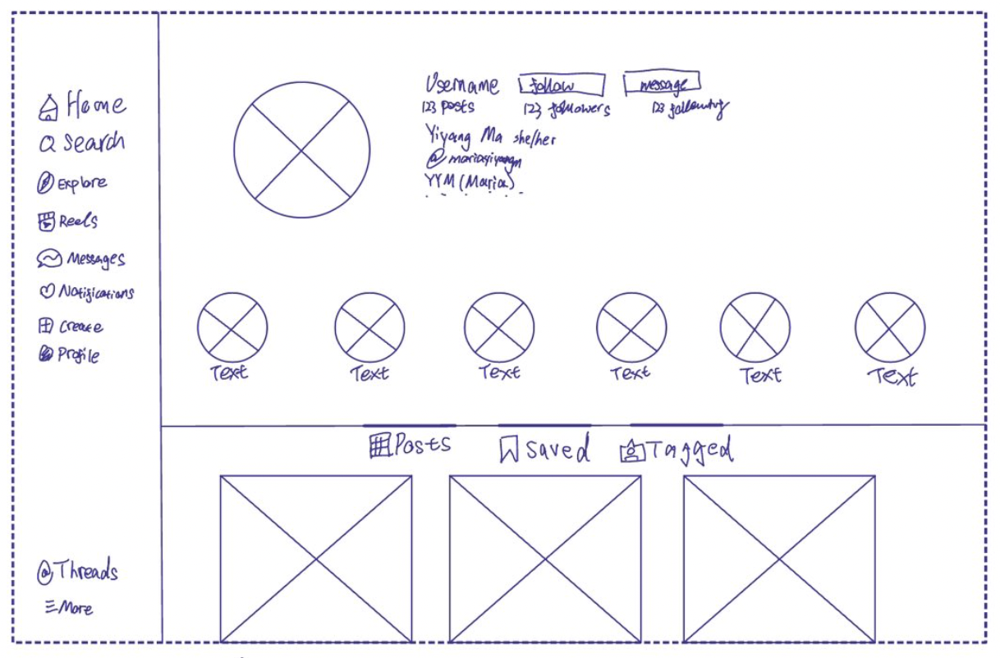
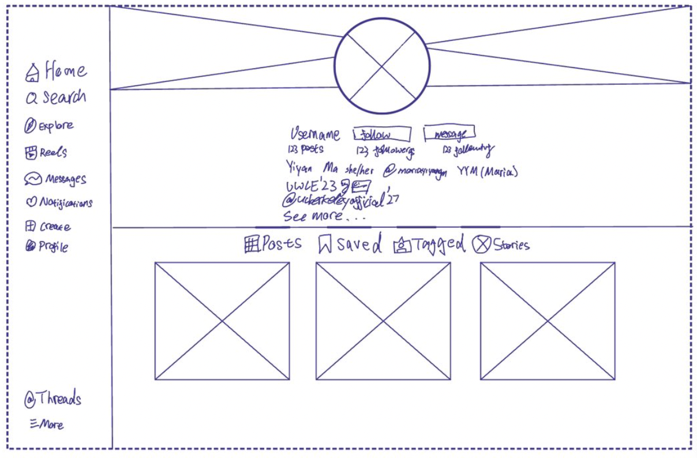

-
Using the favorite website you chose in homework 1, create a wireframe for one page of it using pen/paper, PowerPoint, or any your tool of choice. (use the 'img' tag!) Make sure to let us know what the name of your website is (Use the 'p' tag!)

-
Try to improve the website you've chosen, and create a redesigned wireframe of one page for the same website using the principles of visual hierarchy that you learned from the article.

-
What is the goal of the website? Who is it intended for? How does the design accomplish this? Write 2-3 sentences answering these questions. (Use the 'p' tag again!)
Instagram is a website that provides a platform for users to share photos and videos, connect with others, and discover new content based on their interests. I believe its intended for a broad audience, ranging from teenagers to adults. The design did it by emphasizing visual content through a grid-based, symetric layout, intuitive navigation features. It also personalize the user experience based on their interactions and interests.
-
Write 2-3 sentences about what problems your redesign addressed, and how it solved them.
the profile picture use to be not centered on the top of the page, the black space I left on either side of the profile picture put emphasis on the photo, the background I added behind the user's profile photo allowed them to express their personality more. At the same time, using alignment and proximity allowed the users to draw attention to their profile pic from the viewers. I also put the story highlights into a separate folder just like the post/tag/saved as it would be more convinient for users to access with just one text pointing to where it goes. using the idea of mapping.
NOTE: Make sure to include the wireframe images in the website and don't just put it in your assets folder!
Your wireframes should look something like this: